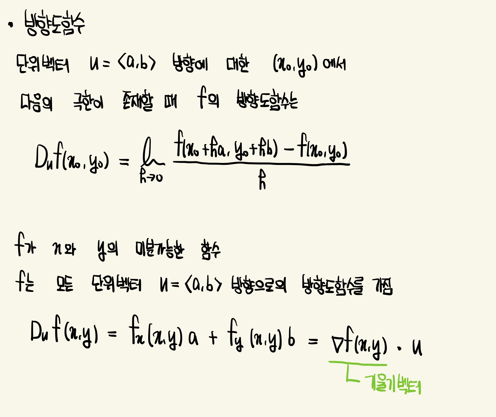
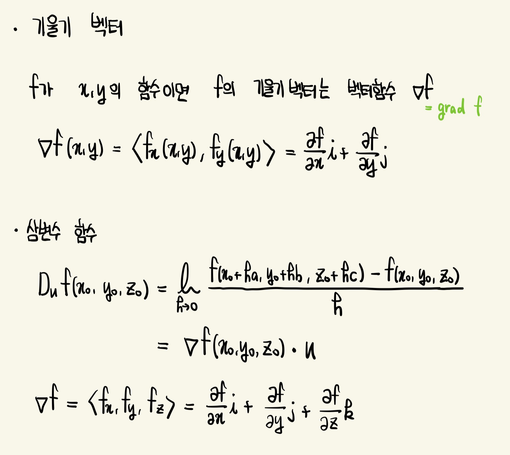
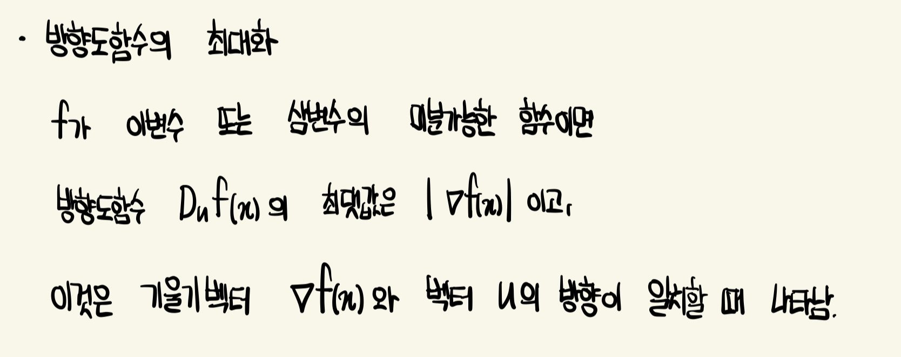
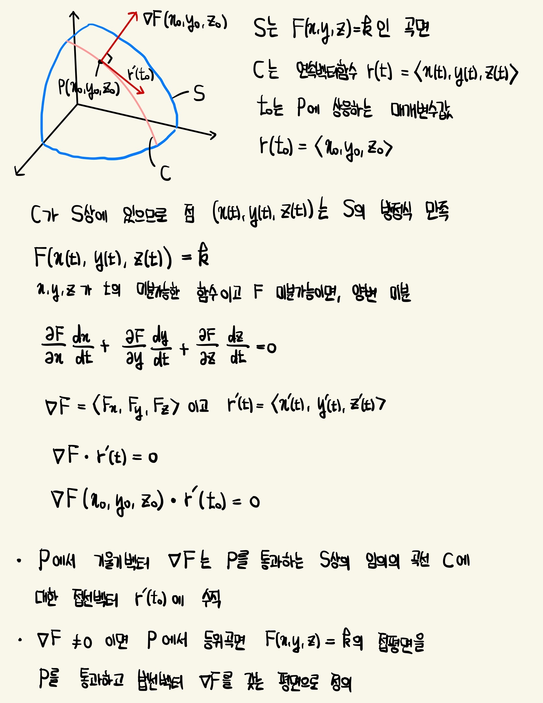
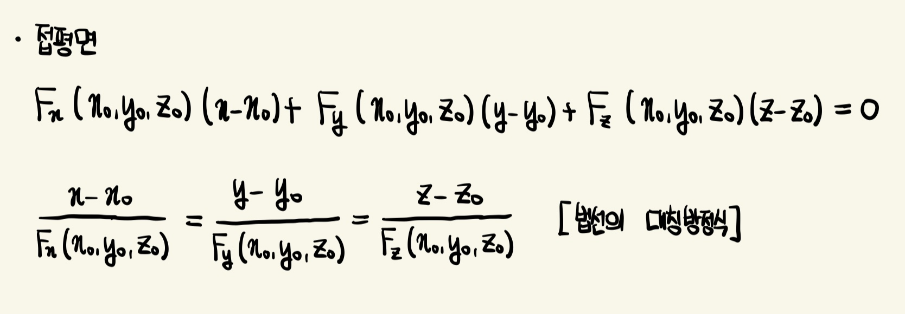
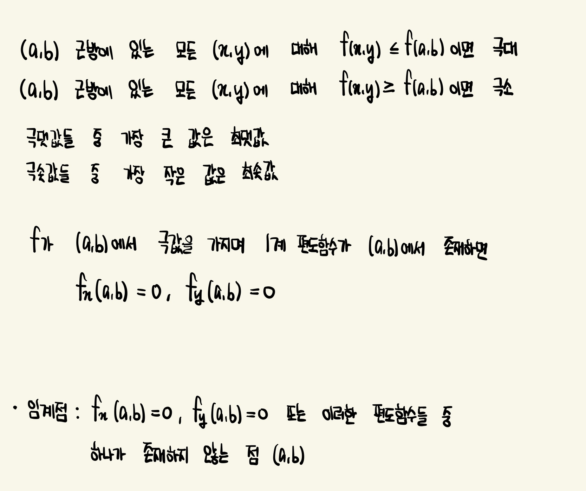
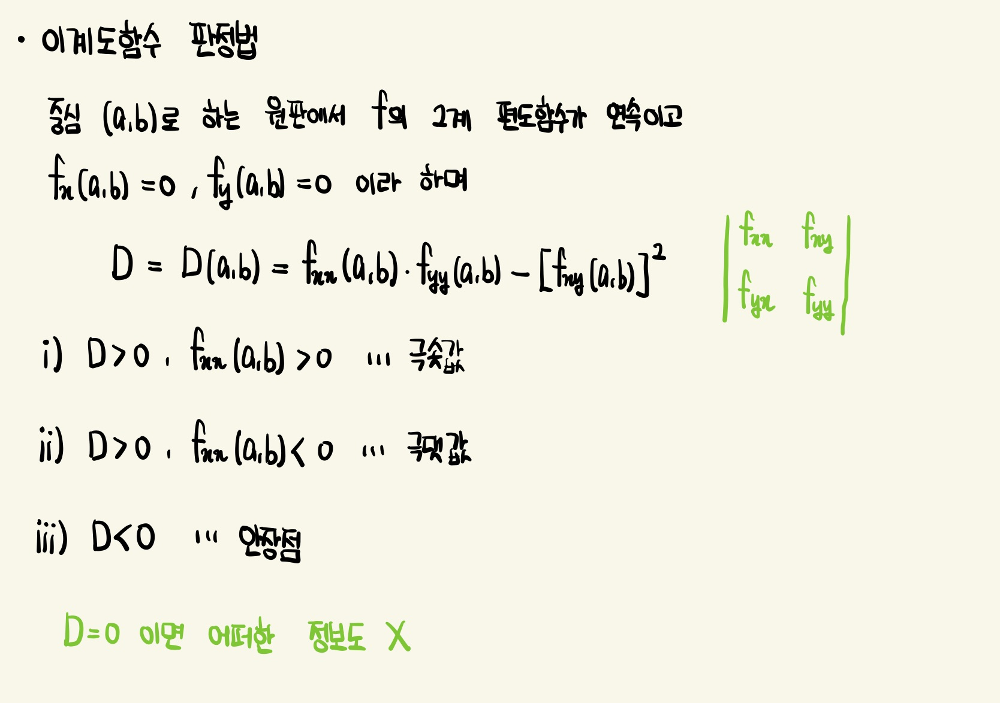
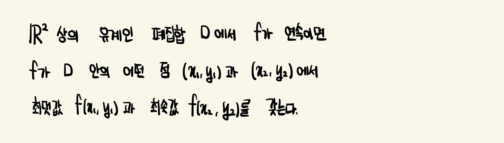

방향도함수 (Directional Derivative)
u 방향에 대한 z의 변화율 (u 방향에 대한 f의 방향도함수)

기울기 벡터 (Gradient Vector)

방향도함수의 최대화
어떤 방향에서 f가 가장 빠르게 변하고 변화율의 최댓값은 무엇인지

등위곡면에 대한 접평면
 
극댓값/극솟값
임게점에서 함수가 반드시 최댓값 또는 최솟값을 가질 필요는 없음. (a,b)가 f_x(a,b)=0, f_y(a,b)=0인 함수 f의 임계점이면 f(a,b)는 극댓값 또는 극솟값이 되거나 아무것도 아닐 수 있는데, 마지막의 경우 (a,b)를 안장점 (saddle point)이라 부름.

이계도함수 판정법

최댓값/최솟값
ℝ^2에서 유계집합(Bounded Set)은 어떤 원판 안에 포함되는 집합이고 크기에서 유한함.
